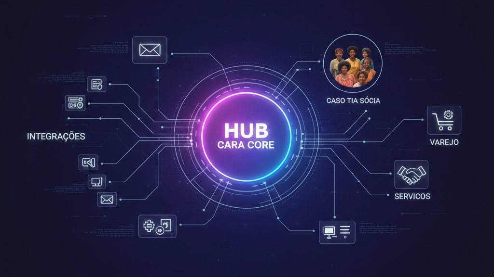

Hub Cara Core: A Máquina de Automação que Conecta Pessoas, Negócios e Comunidades
Introdução: O Centro da Rede
Em operações de varejo, logística e serviços, o problema raramente é falta de sistemas. É falta de conexão: pedidos que vêm por WhatsApp, lista no caderno, telefone; estoque em um lugar, vendas em outro; entregas que dependem de alguém avisar na hora. Quem coordena vira gargalo — e o erro humano vira regra.
O Hub Cara Core foi desenhado para ser o centro dessa rede: uma máquina de automação que orquestra fluxos, integra fontes de pedido, dispara mensagens e mantém visão única do que está acontecendo. Não substitui as pessoas; dá a elas ferramenta para que o trabalho escale e deixe de depender só de memória e boa vontade. Este artigo explica o que é automação de última milha, como o Hub funciona (produto PUDO), integrações e orquestração, a proposta de negócio Tia Sócia, aplicações no varejo e a visão de plataforma.
1. O Que É Automação de Última Milha
Última milha, no mundo físico, é o trecho final da entrega. No digital, é o trecho entre a plataforma e o usuário real: o pedido que não nasceu em um app, a confirmação que precisa chegar por mensagem, o status que alguém tem que repassar. É onde a tecnologia muitas vezes para — e onde o operador humano assume.
Automação de última milha é justamente automatizar esse trecho: registrar o pedido que veio por outro canal, disparar avisos, manter rastreabilidade e permitir que quem coordena veja tudo em um só lugar. O objetivo não é eliminar a pessoa da ponta; é evitar que ela carregue sozinha o peso da comunicação, do registro e do acompanhamento. Quando a última milha é automatizada, pessoas e negócios se conectam de forma mais confiável e escalável.
2. Como o Hub Funciona
O Hub é um produto: aplicação que roda em servidor (WAR em Tomcat), do tipo PUDO (Pick Up / Drop Off), pensada para gestão logística, e-commerce e orquestração de pedidos. No núcleo está a ideia de fluxo: pedidos entram por um ou mais canais, são registrados, ganham status e disparam ações — notificações, atualizações de estoque, integração com meios de pagamento ou com outros sistemas.
Orquestração significa que o Hub não é só um banco de pedidos; é o ponto que decide o que fazer com cada evento. Novo pedido? Registrar, notificar, atualizar fila. Mudança de status? Avisar quem precisa. Mensagens (e-mail, WhatsApp, ou o que estiver integrado) saem de forma controlada, e o histórico fica disponível para auditoria e para o operador. Assim, quem coordena enxerga o quadro inteiro e não depende mais de planilha ou de memória.
3. Integrações e Orquestração: Conversa com Todos os Marketplaces
A proposta central do Hub é conversar com todos os marketplaces: entender as APIs de cada um e centralizar essa conversa no Hub. Cada marketplace fala de um jeito — formato de pedido, status, webhooks, autenticação. O varejista que vende em vários canais hoje precisa integrar cada um à parte, ou contratar soluções que fazem um pouco de cada. O Hub entra como intérprete desse emaranhado: um único ponto que fala com cada marketplace na língua dele e devolve para o operador uma visão unificada. A oportunidade de negócio está justamente em ser o intérprete desse emaranhado de tipos de conversa.
Além dos marketplaces, o Hub orquestra integração com PDV (quando o varejo tem loja física e online), envio de mensagens para cliente ou operador da ponta, e regras: quando um pedido chega, o que disparar; quando o status muda, quem avisar; quando há exceção, como escalar. Cenários típicos incluem e-commerce em cidade média com pedidos de vários canais, operação PUDO (retirada ou entrega em ponto) e retirada em loja com confirmação automática. Em todos os casos, o Hub centraliza a informação e permite que a operação escale.
4. Tia Sócia: Uma Proposta de Negócio
Tia Sócia é uma proposta de negócio da Cara Core: a ideia de um perfil — a pessoa que faz a ponte entre a comunidade e o sistema, recebendo pedidos, confirmando pagamentos e avisando entregas — e de como o Hub poderia atendê-la. Em vez de exigir que todo mundo use um app, o sistema permitiria que um operador cadastrasse e acompanhasse pedidos em nome dos clientes; o cliente final seria atendido por alguém em quem confia, e esse alguém usaria o Hub para não perder pedido e manter tudo rastreável. É uma visão de uso e de inclusão por extensão, não um caso já implantado. O Hub, porém, é um produto real: sistema PUDO (Pick Up / Drop Off), e a proposta Tia Sócia ilustra um dos cenários possíveis de aplicação.
5. Aplicações Reais no Varejo e Serviços
No varejo, o Hub serve a operações que misturam loja física, vendas por mensagem ou telefone, entregas próprias ou terceirizadas. Pedidos de diferentes origens convergem para uma única fila; o gestor vê demanda, estoque e entrega em um só painel. Em serviços, o mesmo raciocínio vale: agendamentos, ordens de serviço, notificações e acompanhamento de status podem ser orquestrados pelo Hub.
Os benefícios são concretos: menos pedido perdido, menos "esqueci de avisar", menos retrabalho para conciliar planilha e realidade. Quem usa o Hub ganha visibilidade e controle; quem é atendido ganha previsibilidade e confiança.
6. Visão de Plataforma e Alinhamento do Protocolo
O Hub não é um projeto pontual; é um produto, uma plataforma que evolui com o ecossistema Cara Core. A visão inclui integrar cada vez mais marketplaces, manter a conversa centralizada no Hub e, ao longo do tempo, forçar o alinhamento do protocolo: que os marketplaces (e quem integra com eles) converjam para formas de conversa mais padronizadas. Quem interpreta o emaranhado hoje tem a chance de influenciar como esse emaranhado se organiza amanhã. Integração com PDV, cenários de última milha e a proposta Tia Sócia são parte do mesmo desenho. A ideia é que o Hub seja o centro da rede para quem opera varejo, logística ou serviços em escala média — onde pessoas, negócios e comunidades se encontram em um único fluxo orquestrado.
Quem adota o Hub está entrando em uma base que a Cara Core mantém e desenvolve: documentação, releases e suporte alinhados ao produto. A máquina de automação que conecta pessoas, negócios e comunidades — e que fala com todos os marketplaces — só faz sentido se for estável, evoluível e integrada ao resto do portfólio.
Conclusão: Conectar Não É Só Integrar
O Hub Cara Core é um produto: sistema PUDO, e existe para encurtar a última milha digital e para ser o intérprete da conversa com todos os marketplaces. A proposta é centralizar no Hub o diálogo com cada API, reduzir o emaranhado para o varejista e, ao longo do tempo, contribuir para que o protocolo se alinhe entre os marketplaces. Orquestração, integrações e mensagens fazem com que pedidos, status e avisos fluam de forma controlada; a proposta Tia Sócia ilustra um cenário possível de inclusão. Conectar pessoas, negócios e comunidades não é só juntar APIs; é ser o intérprete desse emaranhado e desenhar a operação para que quem coordena e quem é atendido ganhem visibilidade e confiança. É nisso que o Hub trabalha.
Hashtags
Contato
- E-mail: suporte@caracore.com.br
- Site: www.caracore.com.br
- LinkedIn: Cara Core Informática
Conecte-se conosco no LinkedIn para mais conteúdos sobre Hub, última milha e automação.
Seguir no LinkedIn
Artigo publicado em 18 de abril de 2026
© 2026 Cara Core Informática. Todos os direitos reservados.